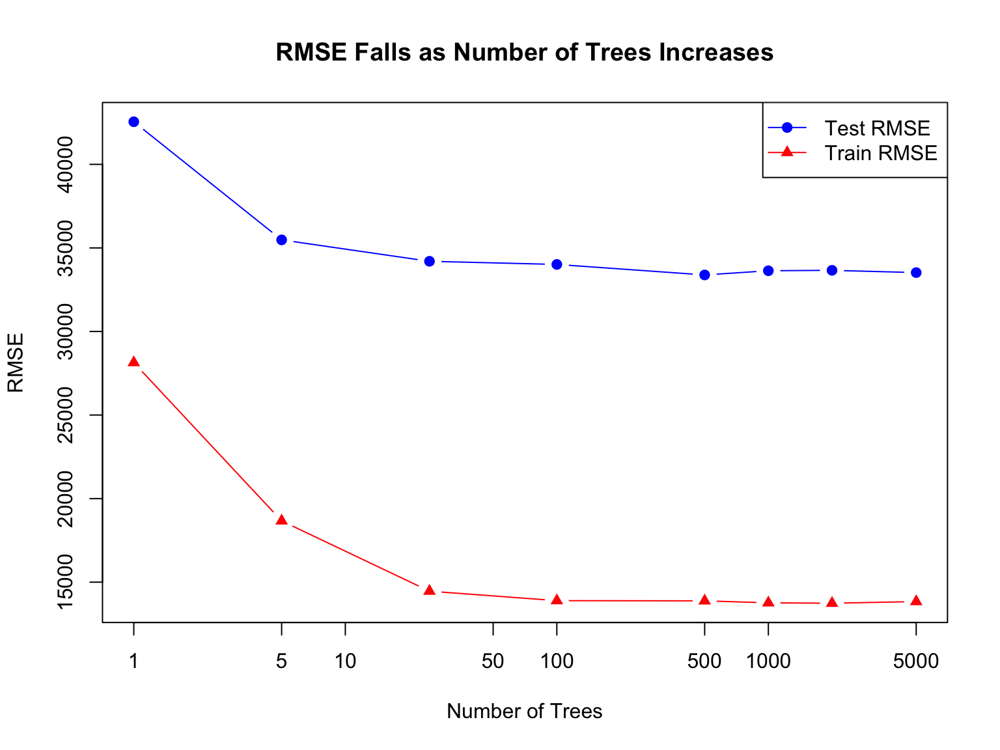

Data prepared with zipCode as categorical variableNumber of unique zip codes: 25 The Power of Weak Learners
Data prepared with zipCode as categorical variableNumber of unique zip codes: 25 Trees RMSE_Test RMSE_Train R_squared
1 1 42548.89 28137.39 0.7153393
2 5 35480.69 18667.02 0.8020593
3 25 34199.72 14460.33 0.8160939
4 100 34011.56 13894.56 0.8181119
5 500 33383.01 13881.62 0.8247726
6 1000 33634.04 13764.16 0.8221274
7 2000 33659.16 13738.77 0.8218616
8 5000 33523.12 13838.62 0.8232987
The most dramatic improvement in performance happens as the model jumps from 1 to 5 trees. The improvement in this jump from 1-5 is similar if not larger than the improvement from 5 all the way to 5000. This is true for both the train and test RMSEs and the R-Squared Value. This shows the concept of diminishing returns from adding more trees where each additional tree leads to a smaller and smaller improvement until each indiviudal tree causes no discernible change in the RMSE or R-Squared Value. And the real “valuable” trees in terms of the largest effect on error and r-sqaured are the earliest ones. :::
:::
For the decision trees the training RMSE starts lower than the test RMSE and quickly becomes much lower as the test begins to actually get worse. This means as the complexity increases, overfitting can start to occur. Overfitting here gets caused as the model starts to memorize the training data and overfits to it, leading to the test RMSE swinging hard and even increasing at times as max depth increases. The random forest shows how both training and test improve as approaching max depth. The train data does wind up far lower then the test showing that you can’t justu se your training data as that would be overly optimistic.Random forest don’t suffer from overfitting even when increasing trees, because of bootstrap sampling, random feature selection, and averaging the trees. Bootstrap sampling helps prevent overfitting through resampling the data and allowing the model to be re-built on different data. Random feature selection helps prevent overfitting by randomly selecting subsets of features to train on preventing the model from overfitting to one feature. Averaging the trees helps to reduce the variance of the model, preventing overfitting. This is why random forests can avoid overfitting whereas decision trees fail to do so.
:::
| Model | Test RMSE | % Improvement vs Linear Regression |
|---|---|---|
| Linear Regression | 33381.91 | |
| Random Forest (1 tree) | 42548.89 | -27.5% |
| Random Forest (100 trees) | 34011.56 | -1.9% |
| Random Forest (1000 trees) | 33634.04 | -0.8% |
The results show that linear regression slightly outperforms all random forest models on this dataset. Random forests are generally expected to perform better when there are nonlinear relationships, but the data here appears fairly homogeneous and linear, which helps the linear model perform best. The 1 tree random forest performs poorly by overfitting, but as the number of trees increases to 100 and 1000, performance becomes comparable to linear regression. The 100 and 1000 tree models reduce error drastically relative to the single tree, though they still fall short of the regression. Overall the added complexity of random forests did not yield a significant gain here. In other datasets random forests likely be expected to outperform, but for this housing data linear regression remains the most efficient and interpretable choice.